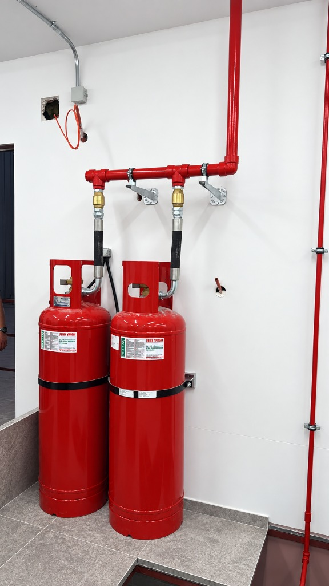
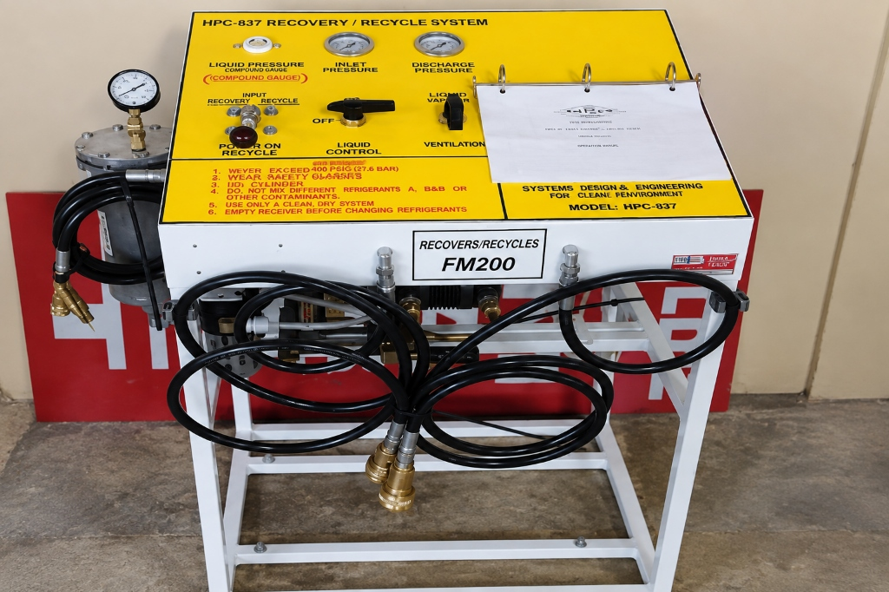

FM200
Gaz Dolumu ve Hidrostatik Test
Boşalan, basınç kaybı yaşayan veya 10 yıllık test süresi dolan söndürme silindirleriniz için acil FM200 gaz dolumu ve hidrostatik test hizmeti.
Yangın sonrası boşalan ya da periyodik manometre kontrollerinde basınç eksilmesi tespit edilen FM200 (HFC-227ea) silindirlerinizi İstanbul içi 4 saatte teslim alıyor; TSE-HYB yetkili dolum istasyonumuzda hassas dolum, 25 bar süper kuru azot basınçlandırması ve sızdırmazlık kontrollerini tamamlayarak 7/24 hızla devreye alıyoruz.

FM200 Gaz Dolumu Nedir?
FM200 gaz dolumu; yangın anında devreye girerek boşalmış ya da zamanla basınç kaybı yaşamış söndürme silindirlerine, kimyasal adıyla HFC-227ea (Heptafloropropan) temiz söndürücü gazın teknik kurallara ve sistem hidrolik projesine uygun miktarda yeniden doldurulması işlemidir.
FM200 gazı renksiz, kokusuz ve elektriksel olarak iletken olmayan yapısıyla bilinir. Silindirler içerisinde basınç altında sıvı fazda muhafaza edilir ve boşalma anında nozullardan ortama püskürtülerek anında gaz fazına geçer. Fiziksel yangın söndürme prensibiyle alevdeki ısı enerjisini mikrosaniyelik hızla soğurarak yangın üçgenini kırar. Gazın kimyasal bileşimi, güvenlik sınırları ve teknik detayları için FM200 gazı içeriği rehberimizi inceleyebilirsiniz.
Su, köpük veya kuru kimyevi toz gibi geleneksel söndürücüler uygulandıkları alanda kalıntı ve ekipman korozyonu bırakırken, FM200 gazı boşaldıktan sonra herhangi bir tortu bırakmaz ve ek bir temizlik gerektirmez. Bu nedenle veri merkezleri, server odaları, trafo merkezleri, arşivler ve hassas elektronik donanımların bulunduğu mahallerde vazgeçilmez bir tercihtir.
FM200 Gazı Neden Biter?
Basınçlı kapalı devre çalışan yangın söndürme silindirlerinde gaz eksilmesinin veya tamamen tükenmesinin arkasında 4 temel operasyonel ve mekanik etken yatar:
Mahaldeki duman ve ısı dedektörlerinin çapraz zon (cross-zone) prensibiyle yangın teyidi vermesi durumunda söndürme kontrol paneli solenoid aktivatörü tetikler. Sistem yaklaşık 10 saniye içerisinde tüm FM200 gazını ortama homojen olarak boşaltarak yangını söndürür. Deşarj sonrasında silindir tamamen boşalır ve mahal bir sonraki olası riske karşı savunmasız kalır.
Yangın söndürme tüpleri yıllarca sabit konumda kalsa dahi, ortamdaki mevsimsel sıcaklık dalgalanmaları, mekanik titreşimler ve kauçuk/EPDM sızdırmazlık contalarının elastikiyetini kaybetmesi sonucu vana göbeğinden veya manometre dişlerinden kılcal gaz kaçakları meydana gelir. Bu durum basınç ibresinin yeşil alandan kırmızıya düşmesine sebep olur.
25 bar çalışma basıncı altında bulunan diferansiyel basınçlı silindir vanalarında ve aşırı basınç tahliye disklerinde (patlama pulu) zamanla metal yorgunluğu oluşabilir. Emniyet diskindeki mikro çatlaklar veya vana iç sızdırmazlık yüzeylerindeki korozyon, gazın hissedilmeden yavaşça atmosfere salınmasına yol açar.
Tesislerde yapılan inşaat/tadilat kaynaklı aşırı tozlanma sonucu dedektörlerin kilitlenmesi, yetkisiz personelin manuel boşaltma butonuna basması ya da bakım esnasında mekanik kilit piminin takılmaması gibi operasyonel hatalar nedeniyle silindirler istemsizce boşalabilir.

FM200 Gaz Dolumu ve Sistem Kontrolleri
FM200 dolum işlemi yalnızca gaz transferinden ibaret olmayıp, silindirin ve vana donanımlarının basınç bütünlüğünü korumayı hedefleyen teknik bir süreçtir:
Hidrostatik Test (10 Yıl Kuralı) Nedir?
Gazlı yangın söndürme sistemlerinde kullanılan dikişsiz çelik silindirler, sürekli olarak 25 bar ile 42 bar arasında yüksek basınca maruz kalır. Basınçlı Ekipmanlar Yönetmeliği (2014/68/AB - PED), TS EN 13322-1 ve uluslararası NFPA 2001 / ISO 14520 standartları uyarınca, üretim tarihinden itibaren en geç 10 yılını dolduran tüm yangın söndürme silindirlerinin hidrostatik basınç testine tabi tutulması kanuni bir zorunluluktur.
Hidrostatik test işleminde silindir içindeki FM200 gazı özel kurtarma ünitesiyle emniyetli tanklara geri kazanılır. Ardından silindir suyla doldurularak çalışma basıncının 1.5 katına (yaklaşık 250 bar test basıncına) kadar kademeli olarak basınçlandırılır. Test kabini içerisinde silindir et kalınlığındaki esneme, kalıcı hacimsel genleşme ve mikroskobik çatlak riskleri hassas sensörlerle ölçülür.
TSE-HYB Yetkili Dolum Tesisimizin Avantajları
Yetkisiz veya merdiven altı dolumlar sisteminizin yangın anında çalışmamasına ve sahte gaz karışımlarına yol açar. Fenix Yangın TSE Hizmet Yeterlilik Belgesi ve uluslararası akreditasyonlarıyla tam güvence sunar:
Türk Standardları Enstitüsü onaylı Hizmet Yeterlilik Belgesi (TSE-HYB) kapsamında, yasal mevzuata %100 uygun resmi dolum, bakım ve hidrostatik test hizmeti sunuyoruz.
Dolumlarımızda yalnızca uluslararası saflık sertifikalarına sahip orijinal HFC-227ea gazı kullanılır. Yan sanayi veya geri dönüştürülmüş kalitesiz gaz riski kesinlikle barındırmaz.
Dolum işlemi akredite kalibrasyonlu dijital kantarlar ve kütlesel akış sayaçları ile yürütülür; projenizde hesaplanan gaz gramajı hassasiyetle silindire yüklenir.
Nemden arındırılmış yüksek saflıktaki azot (N₂) ile 25 bar basınca getirilen silindirlerde korozyon ve vana donması riski engellenir, nominal tahliye hızı korunur.
Dolum sonrası tüm vana gövdeleri, emniyet pusetleri ve bağlantı dişleri elektronik kaçak dedektörleriyle taranarak %100 sızdırmazlık teyit edilir.
İşlemler tamamlandığında tartım değerleri, seri numaraları ve test sonuçlarını içeren resmi teknik servis formu düzenlenerek İSG ve İtfaiye denetimleri için teslim edilir.
FM200 Gazlı Söndürme Sisteminin Yapısı
FM200 teknik şartnamelerinde ve mühendislik tasarımlarında aranan temel sistem ekipmanları ve dolumla ilişkili bileşenler.
Gazın sıvı fazda ve basınç altında emniyetle muhafaza edildiği çelik tüpler.
Tüp içindeki azot basıncını devamlı gösteren kalibreli manometreler.
Hızlı açılma sağlayan diferansiyel basınçlı silindir vanaları.
Gazın mahale dengeli ve homojen dağılmasını sağlayan özel nozul hatları.
Solenoid bobinleri ve manuel acil durum boşaltma mekanizmaları.
Dedektör sinyallerini işleyerek ateşi tespit eden ve boşaltmayı yöneten panel.
FM200 Gaz Dolumu Sonrası Kontroller
Dolum tamamlandıktan sonra sistemin sahada güvenle çalışabilmesi için uygulanan kritik doğrulama aşamaları:
Doldurulan silindirin darası ve net gaz miktarı kalibreli kantarla tartılarak silindir etiketine işlenir.
Azot basınçlandırma seviyesi manometre üzerinden kontrol edilir ve basınç dengesi teyit edilir.
Silindir vanası, emniyet diski ve bağlantı dişleri gaz dedektörü veya test çözeltisiyle kaçak kontrolüne alınır.
Tüpler mahale getirilerek manifold hattına bağlanır; selenoid ve panel kontrolleri yapılarak sistem aktif edilir.

FM200 Gazı Hakkında
Temiz söndürücü gazlar sınıfında yer alan FM200 (HFC-227ea) gazının öne çıkan fiziksel ve operasyonel özellikleri:
FM200 gazı elektrik iletkenliği olmayan, yanıcı yüzeyde kimyasal leke veya korozyon oluşturmayan temiz bir ajandır. Çelik, bakır, alüminyum, pirinç, paslanmaz çelik gibi metaller ve elektronik devre kartları üzerinde fiziksel hasar bırakmaz. Yangın sonrasında havalandırma yoluyla ortamdan kolaylıkla tahliye edilir.
Kaynak teknik prensiplere uygun olarak gazlı sistemler yangın uyarısıyla hızla devreye girer ve yaklaşık 8 ila 10 saniye aralığında nozullardan ortama boşalır. Ozon tüketme potansiyeli bulunmayan bu sistem, minimum depolama alanı gereksinimi ile kritik hacimlerde yüksek güvenlik sağlar.
FM200 Gazı Fiyatları Nasıl Belirlenir?
FM200 gaz dolumu maliyetleri sabit bir tarife üzerinden değil, projenin ve korunan mahalin teknik gereksinimlerine göre hesaplanır:
Acil Dolum Teklifi Alın
Sisteminizde bulunan silindir kapasitelerini, tüp adedini veya basınç durumunu ileterek tesisinize özel FM200 gaz dolum ve test fiyat teklifinizi hemen hazırlayalım.
Fiyat Teklifi İsteyinFM200 Gazlı Söndürme Sistemi Bakımı
Gaz dolum ihtiyacı çoğu zaman 6 aylık ve yıllık periyodik bakım kontrolleri sırasında ortaya çıkar. Sisteminizin manometre değerleri, ultrasonik sıvı seviyeleri, selenoid bobinleri ve algılama hatları düzenli denetlenerek olası kaçaklar erkenden engellenir.
FM200 Gaz Dolumu Hakkında Merak Edilenler
FM200 söndürme tüplerinin dolum prosedürleri, basınç kriterleri ve kontrolleri hakkında en sık sorulan sorular.
FM200 gaz dolumu, sistem bir yangın veya test anında devreye girerek gaz boşalttığında ya da periyodik muayenelerde manometre basıncının yeşil alanın altına düştüğü ve gaz miktarında kayıp tespit edildiği durumlarda gecikmeksizin yapılmalıdır.
Silindir üzerinde bulunan manometre ibresinin nominal çalışma sınırının (kırmızı bölgeye doğru) altına düşmesi veya periyodik kontrollerde yapılan hassas tartım ölçümlerinde silindir ağırlığının etiket değerinden eksik çıkması basınç kaybına işaret eder.
Basınçlı Ekipmanlar Yönetmeliği (2014/68/AB - PED), TS EN 13322-1 ve ISO 14520 standartları gereğince gazlı söndürme silindirlerinin azami 10 yılda bir hidrostatik basınç testine tabi tutulması kanuni bir zorunluluktur.
Fenix Yangın acil durum protokolü kapsamında, İstanbul içi boşalan silindirler 4 saat içerisinde adresten teslim alınır. TSE-HYB yetkili dolum istasyonumuzda dolum ve sızdırmazlık testleri tamamlanarak en kısa sürede sahada yerine monte edilir.
Dolum işlemi güvenlik standartları, hassas tartım ve yüksek saflıkta azot basınçlandırma ekipmanlarının gerekliliği doğrultusunda yetkili dolum istasyonumuzda kontrollü şartlarda gerçekleştirilir; ardından silindirler sahada yerine monte edilir.
FM200 dolum fiyatları; silindirin kapasitesine (doldurulacak net kilogram miktarına), silindir adedine, hidrostatik test ihtiyacına, valf/conta yenileme durumuna ve güncel hammadde koşullarına göre teknik değerlendirme sonrasında belirlenir.
Dolum işlemi tamamlandıktan sonra yapılan ağırlık ölçümlerini, basınç değerlerini, hidrostatik test raporunu ve uygulanan sızdırmazlık testlerini içeren resmi teknik Dolum ve Muayene Formu hazırlanarak sistem yetkililerine teslim edilir.
İlgili Hizmetler ve Sistemler
Fenix Yangın bünyesinde gazlı söndürme sistemleri için sunduğumuz diğer mühendislik çözümleri.
HFC-227ea temiz gazlı yangın söndürme sistemlerinin projelendirme ve montajı.
Sistem İncele →Silindir basınçları, vanalar ve dedektör hatlarının düzenli yerinde denetimi.
Bakım Detayları →Mahalin 10 dakikalık gaz tutma süresinin kapı fanı ile simülasyonu.
Test Hizmeti →FM200 Gaz Dolumu ve Test İçin Hemen İletişime Geçin
İstanbul içi 4 saatte acil teslim alma, 25 bar kuru azot dolumu ve TSE-HYB garantisiyle 7/24 hizmetinizdeyiz.